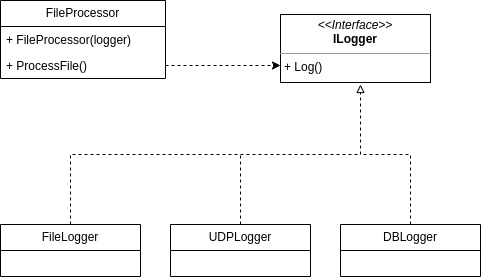

The Dependency Inversion Principle (DIP) is the fifth principle of the SOLID principles.
The DIP states that high-level components should not depend on low-level components.
Both should depend on abstractions. Abstractions should not depend on details.
Details should depend on abstractions.

The constructor of the FileProcessor accepts an ILogger interface and this interface is used to log
the information. If the logger is replaced with a different logger, the FileProcessor
does not need to be changed and loose coupling between components is achieved.
Its impossible to implement this principle 100% but knowing the guidelines can guide design.
No variable should hold a reference to a concrete class.
No class should be derived from a concrete class.
No method should override an implemented method of any of its base classes.
Reminder:Separate the things that change from the things that stay the same. If the "thing"
may change, then it should be abstracted and encapsulated.